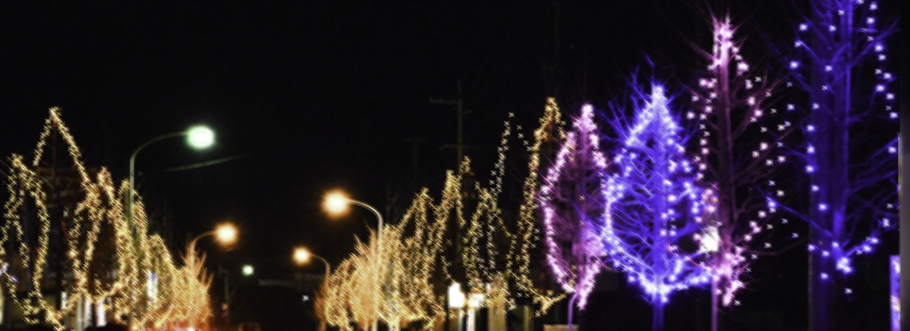

豊里駅、産直がんばる館前
イルミネーションが街を照らす「冬 の蛍通り」が12月2日―1月31日まで 開かれます。期間中は午後5時―9時まで、陸前豊里駅前や県道涌谷津山線の 歩道約200メートルのイチョウ並木が約4万個の電球で彩られ、オレンジや白の光が蛍の様に輝きます。 初日の12月2日午後5時から駅前を会場に点灯セレモニーが開かれます。 地元の子どもたちによる、ヒップホップダンスやピアノ演奏が披露されるほか、 来場した子どもたちには、サンタから嬉 しいクリスマスプレゼントも贈られます！430人分、用意されており、何が入っているかは開けてからのお楽しみ！温かい スープと豚汁も各300食が無料で振る舞われ、家族で楽しめるイベントです。心と体も暖まる豊里町自慢の冬の風 物詩を楽しみに、ちょっと、そこまでお出かけしてみませんか？
© Copyright 2017 豊里駅前冬の蛍通り実行委員会